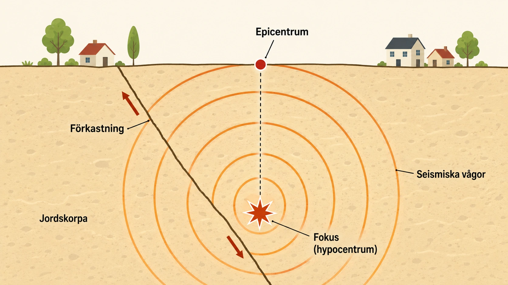
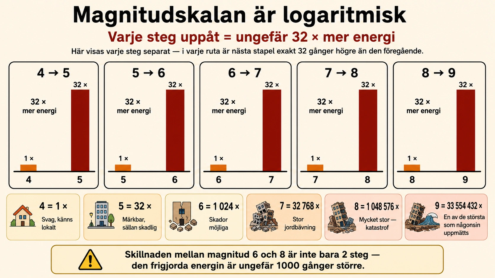
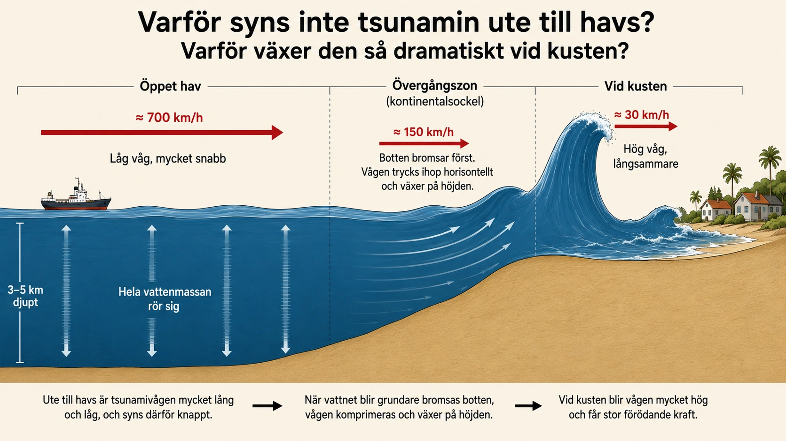

Jordbävningar
— när jordskorpan brister och marken skakar —
Marken kan plötsligt skaka
En tidig morgon den 11 mars 2011 satt människor i japanska Sendai vid frukostbordet, gick till skolan eller var på väg till jobbet. Klockan 14:46, lokal tid, skakade hela östra Japan i sex hela minuter. Skyskrapor svängde fram och tillbaka i Tokyo, hundratals kilometer från epicentrum. Vägar sprack. Vid kusten började havet snart bete sig egendomligt. Det var en av de kraftigaste jordbävningar som någonsin uppmätts.
Jordbävningar är en av de mest dramatiska påminnelserna om att jorden under våra fötter inte är så stilla som den verkar. Men jordbävningar är inte slumpmässiga händelser. De följer regler. När man förstår vad som orsakar dem, kan man också förstå varför de sker just där de sker — och varför vissa områden är mycket farligare än andra.
Allt börjar med plattorna
I avsnitt 2 lärde vi oss att jordens yttersta skal är uppdelat i tektoniska plattor som rör sig långsamt — några centimeter per år, ungefär lika snabbt som dina naglar växer. Vi lärde oss också att plattorna kan glida isär, krocka eller glida förbi varandra. Och vi såg att de möts vid plattgränser där berggrunden ofta är sprucken och full av förkastningar.
Det är längs dessa förkastningar de flesta jordbävningar sker. Förkastningarna är som svaghetszoner i berggrunden — gamla sprickor där bergmassor redan har rört sig en gång, och där de kan röra sig igen. När plattorna fortsätter sin långsamma rörelse kan berggrunden vid förkastningarna fastna mot varandra. Då händer ingenting just där, men spänningar börjar byggas upp.
Spänningen som byggs upp — pinneanalogin
Tänk på en pinne som du böjer mellan händerna. Först händer ingenting. Pinnen är böjd, men hel. Du böjer den lite till. Ingenting. Lite till. Fortfarande hel — men du känner att den blir spänd. Och så, helt plötsligt, knäcker pinnen av sig. All den uppbyggda spänningen frigörs på en gång, i ett knäppande ögonblick.
Så fungerar berggrunden längs en förkastning. När plattorna rör sig men berget fastnar, byggs spänningen upp i berggrunden. Tio år. Hundra år. Tusen år. Berggrunden böjs långsamt, böjs mer, böjs ännu mer. Och så, när trycket blir för stort, brister berget. Bergmassorna glider plötsligt till längs förkastningen. På några sekunder rör de sig kanske flera meter — en rörelse som under "normal" plattektonisk hastighet hade krävt hundratals år.
När detta händer frigörs all uppbyggd energi i ett ögonblick. Det är en jordbävning.

Fokus och epicentrum
En jordbävning startar i en bestämd punkt nere i jordskorpan. Den punkten kallas fokus eller hypocentrum. Det är där berggrunden brister först, där rörelsen börjar. Fokus kan ligga några kilometer nere i jordskorpan, eller flera hundra kilometer djupt — beroende på vilken typ av jordbävning det är.
Punkten rakt ovanför fokus, uppe på markytan, kallas epicentrum. Det är den plats människor markerar på kartan när de pratar om "var" en jordbävning hände. Nära epicentrum känns skakningarna oftast som starkast, för där når energin från fokus markytan snabbast och starkast.
Men jordbävningens energi stannar inte vid epicentrum. Den sprider sig vidare som vågor genom marken — åt alla håll, både ner i jordens inre och ut längs ytan. Det är dessa vågor vi känner när marken skakar.
Seismiska vågor — så sprids skalvet
När energin frigörs från fokus sprids den som seismiska vågor. Det fungerar ungefär som när du kastar en sten i en sjö. Stenen träffar vattenytan i en punkt, och från den punkten sprider sig vågor i alla riktningar.
Skillnaden är att seismiska vågor inte rör sig i vatten utan i fast berg. De färdas mycket snabbt — flera kilometer per sekund. På några minuter kan de spridas över hela jorden. Vågorna kan färdas genom jordens inre, och då rör de sig snabbast. Men de vågor som rör sig längs jordytan är ofta de farligaste, för det är de som påverkar byggnader, vägar och broar där människor bor.
Det är därför moderna varningssystem kan ge några sekunders förvarning. När en kraftig jordbävning sker långt borta upptäcker seismografer rörelsen, och varningssignaler kan skickas iväg snabbare än vågorna själva färdas. Det räcker inte för att rädda byggnader, men det räcker ofta för att stoppa höghastighetståg, stänga av gasledningar och få människor att söka skydd. Några sekunder kan göra stor skillnad.
Var sker jordbävningar mest?
Om man tar en karta över världens jordbävningar de senaste hundra åren ser man tydligt: de är inte slumpmässigt utspridda. De följer plattgränserna. Längs Anderna, längs Stillahavets västkust, genom Japan och Indonesien, längs Himalayas fot, längs Mittatlantiska ryggen. Det vi kallade Eldringen i avsnitt 2C är inte bara världens vulkaniska bälte — det är också ett av världens mest jordbävningsdrabbade områden. Mer än 80 procent av världens kraftigaste jordbävningar sker längs Eldringen.
Detta är ingen tillfällighet. Det är där plattorna pressas mot varandra, där förkastningar är aktiva, där spänningar hela tiden byggs upp och släpper. Japan ligger ovanpå en av världens mest aktiva subduktionszoner, och därför är jordbävningar en del av landets vardag.
Men jordbävningar kan också ske långt från plattgränserna. Inne på en platta finns ofta gamla, inaktiva förkastningar — som de svenska från avsnitt 2D. Ibland kan dessa reaktiveras av andra orsaker, till exempel postglacial landhöjning. Då sker så kallade intraplatejordbävningar. De är sällsynta och oftast svaga, men kan finnas överallt — också i Sverige.
Sammanfattning
Jordbävningar är ingen mystik. De är direkta konsekvenser av plattornas rörelse. När plattor pressas mot varandra fastnar berget längs förkastningarna. Spänning byggs upp under många år. När berget till slut brister, släpper spänningen och energin sprids som seismiska vågor från en punkt nere i berget — fokus — ut till markytan och vidare. Punkten rakt ovanför fokus heter epicentrum, och där känns skakningarna oftast starkast.
I nästa underdel går vi närmare in på hur man mäter jordbävningar — hur stora de är, hur kraftigt de skakar, och varför det finns flera olika skalor.
Marken kan plötsligt skaka
En jordbävning händer när marken plötsligt skakar. Det kan hända för att stora bergmassor djupt nere i jorden rör sig på en gång.
Jordbävningar är inte slumpmässiga. De följer regler. När man förstår reglerna kan man förstå varför de sker just där de sker.
Allt börjar med plattorna
- Jordens yta är uppdelad i stora plattor
- Plattorna rör sig långsamt
- Där plattorna möts finns förkastningar i berget
- Längs förkastningarna kan jordbävningar uppstå
I avsnitt 2 lärde vi oss att jordens yttersta skal är uppdelat i tektoniska plattor. Plattorna rör sig långsamt, ungefär lika snabbt som dina naglar växer.
När plattorna rör sig mot eller längs varandra kan berget spricka. Sådana sprickor kallas förkastningar. Det är längs förkastningarna som de flesta jordbävningar sker.
Spänningen byggs upp — som en pinne som böjs
- Berget kan fastna längs förkastningen
- Men plattorna fortsätter att röra sig
- Då byggs spänning upp i berget
- Till slut brister berget plötsligt
- Då frigörs all energi på en gång — en jordbävning
Tänk på en pinne som du böjer. Först händer ingenting. Du böjer mer. Lite mer. Och så plötsligt knäcker pinnen — allt på en gång.
Så fungerar berget vid en förkastning. Plattorna fortsätter att röra sig, men berget fastnar. Spänning byggs upp under många år. Till slut blir trycket för stort. Berget brister, och bergmassorna rör sig plötsligt flera meter på några sekunder.
När detta händer frigörs all uppbyggd energi. Det är en jordbävning.
Fokus och epicentrum
- Fokus är punkten där jordbävningen startar — nere i berget
- Epicentrum är punkten rakt ovanför fokus — på markytan
- Nära epicentrum skakar marken som starkast
En jordbävning startar i en bestämd punkt nere i jordskorpan. Den punkten kallas fokus (eller hypocentrum). Det är där berget brister först.
Punkten rakt ovanför fokus, uppe på markytan, kallas epicentrum. Det är den plats man markerar på en karta. Nära epicentrum känns skakningarna oftast som starkast.
Bilden visar var en jordbävning börjar. Lägg märke till:
- Fokus ligger djupt nere i jorden — där skalvet startar
- Epicentrum ligger rakt ovanför på markytan
- Cirklarna visar hur seismiska vågor sprids från fokus
- Vågorna sprids åt alla håll genom berget
Fundera: Varför skakar marken som starkast nära epicentrum?
Seismiska vågor
- Energin från en jordbävning sprids som vågor
- Vågorna rör sig genom berget
- De färdas mycket snabbt — flera kilometer per sekund
- Vågorna längs ytan gör mest skada
När energin frigörs från fokus sprids den som seismiska vågor. Det fungerar som när du kastar en sten i en sjö — vågor sprids ut åt alla håll från där stenen träffade vattnet.
Skillnaden är att seismiska vågor rör sig i fast berg, inte i vatten. De färdas mycket snabbt. På några minuter kan de spridas över hela jorden.
De vågor som rör sig längs jordytan är ofta de farligaste. Det är de som påverkar byggnader, vägar och broar.
Var sker jordbävningar mest?
- Jordbävningar sker mest vid plattgränser
- Många kraftiga skalv sker runt Stilla havet
- Området kallas Eldringen
- Det är samma område som har många vulkaner
Jordbävningar är inte slumpmässigt utspridda. De följer plattgränserna. Många kraftiga skalv sker i Japan, Indonesien, Chile och Kalifornien — alla länder runt Stilla havet.
Detta område kallas Eldringen. Det är samma område där det finns många vulkaner. Båda är följder av samma sak: plattorna rör sig mot varandra och pressar berget.
Jordbävningar kan också ske långt från plattgränserna, men det är mycket mer sällsynt. Sverige har bara små och få jordbävningar eftersom vi ligger mitt på en platta.
Vad händer sedan?
I nästa underdel ska vi titta på hur man mäter jordbävningar — hur man säger hur stora de är, och varför det finns flera olika skalor.
Seismiska vågor — flera olika typer
När vi i standardtexten pratade om "seismiska vågor" som om de vore en enda sorts våg, var det en förenkling. I verkligheten skickar en jordbävning ut flera olika typer av vågor, och var och en beter sig annorlunda. För seismologer är detta inte en detalj — det är hela grunden för deras arbete.
De första vågorna som anländer från en jordbävning kallas P-vågor. P står för "primary" — först. P-vågorna är tryckvågor, ungefär som ljudvågor. De pressar ihop och drar ut berget i vågens riktning, lite som en spiralfjäder som man trycker ihop och släpper. P-vågorna är snabbast av alla seismiska vågor — de färdas genom berg med fyra till åtta kilometer per sekund. De kan färdas genom både fast berg och flytande material.
Sedan kommer S-vågorna. S står för "secondary" — andra. S-vågorna är skjuvvågor. De får berget att skaka från sida till sida, som när du skakar ett rep så att det rör sig upp och ner. S-vågorna är långsammare än P-vågorna och kan dessutom bara färdas genom fast berg. De kan inte ta sig genom flytande material — och just det faktum är hur seismologer för länge sedan upptäckte att jordens yttre kärna är flytande. Vågorna kunde helt enkelt inte ta sig genom den.
Sist kommer ytvågorna. De är långsammast men oftast farligast. Ytvågorna färdas inte genom jordens inre utan rör sig längs ytan, som vågor på en sjö. De får marken att rulla och svalla. När en kraftig jordbävning väl når en stad är det oftast ytvågorna som river ner byggnader. De har stor amplitud — alltså stora rörelser — och de varar längre tid.
För människor som upplever en jordbävning betyder skillnaden mellan vågtyperna något konkret. Först märks ett kort, snabbt skakande — det är P-vågen som anländer. Sedan kommer en kraftigare, sidledsskakning — det är S-vågen. Och så börjar marken rulla och svalla på riktigt — det är ytvågorna. Tiden mellan P-vågen och S-vågen avgör hur långt borta epicentrum låg. Ju längre tid, desto längre avstånd. Detta är en av seismologernas viktigaste verktyg.
Hur seismologer "läser jorden" — triangulering
När en jordbävning sker någonstans i världen registreras den av seismografer runt om hela planeten. Men hur vet seismologerna exakt var jordbävningen hade sitt epicentrum? Hur kan de säga "magnitud 7,2, epicentrum 32 km utanför kusten" bara minuter efter att skalvet inträffat?
Svaret bygger på en enkel princip: tidsskillnaden mellan P-vågen och S-vågen. Eftersom P-vågen är snabbare än S-vågen kommer den fram först. Ju längre bort en seismograf är från epicentrum, desto större blir tidsskillnaden mellan vågorna när de anländer. På fem mils avstånd kanske skillnaden är tre sekunder. På femtio mils avstånd kanske tjugofem sekunder. Och så vidare.
En enda seismograf kan alltså säga: "Epicentrum ligger på X kilometers avstånd härifrån." Men inte i vilken riktning. Stationen kan rita en cirkel runt sig själv med X kilometers radie, och epicentrum ligger någonstans på den cirkeln — men var?
För att svara på det behövs minst tre seismografer. Var och en av dem kan rita sin egen cirkel. När man ritar tre cirklar från tre olika stationer, möts de i en enda punkt — och just där ligger epicentrum. Detta kallas triangulering. Det är samma princip som GPS-satelliter använder för att bestämma var en telefon befinner sig på jordytan.
Idag finns hundratals seismografstationer världen över. Varje stor jordbävning registreras av många av dem samtidigt, och datorerna räknar ut epicentrum på sekunder. När du läser i nyheterna att en jordbävning hade epicentrum "32 km öster om Sendai" är det resultatet av exakt denna process — vågor som färdas genom berget, registreras av instrument, och beräknas till en enda punkt på kartan.
Hur stor var skalvet?
Direkt efter en stor jordbävning ställs alltid samma fråga. Hur stort var det? Hur kraftigt har marken skakat? Hur ska man jämföra det med tidigare jordbävningar?
Frågan är inte så enkel som det låter. Faktum är att den innehåller två olika frågor. Den ena är: hur mycket energi frigjordes nere i jordskorpan? Den andra är: hur kraftigt skakade marken där människor befann sig? Det är inte samma sak. Två jordbävningar kan frigöra exakt lika mycket energi, men ge helt olika upplevelser för dem som känner dem — beroende på avstånd, marktyp och hur byggnader är konstruerade. Därför finns olika skalor för att mäta jordbävningar.
Richterskalan — den klassiska
Den mest kända skalan är Richterskalan. Den skapades på 1930-talet av den amerikanske seismologen Charles Richter. Han ville ha ett enkelt sätt att jämföra storleken på olika jordbävningar i Kalifornien. Han mätte hur stort utslag jordbävningen gav på en seismograf — alltså ett instrument som registrerar markrörelser — och översatte det till ett tal.
Richterskalan blev snabbt populär och används fortfarande i vardagligt språk. När människor pratar om "jordbävningen mätte 6,5 på Richterskalan" är det Richters skala de syftar på, även om vetenskapen idag oftast använder en annan.
Skalan är logaritmisk — en viktig sak att förstå
Richterskalan ser ut som en vanlig sifferskala, men den är inte det. Den är logaritmisk. Det betyder att varje steg på skalan inte är ett "lika stort" steg — det är ett enormt steg.
För att se vad det betyder, jämför två jordbävningar. En jordbävning med magnitud 6 är inte bara lite kraftigare än en med magnitud 5. Markrörelsen är ungefär tio gånger större. Och den energi som frigörs nere i berget är ungefär 32 gånger större.
Stegar man upp ett steg till — från magnitud 6 till magnitud 7 — är energin igen 32 gånger större. Det betyder att en jordbävning med magnitud 7 frigör cirka 32 × 32 = 1000 gånger mer energi än en med magnitud 5. Och en magnitud 8 frigör cirka 32 000 gånger mer energi än en magnitud 5.
Det är därför skillnaderna mellan magnituder är så viktiga. En jordbävning av magnitud 6 är allvarlig — den kan skada byggnader. En jordbävning av magnitud 8 är en katastrof av en helt annan kategori. Skillnaden är inte 2 — den är tusenfaldigt större.

Momentmagnitud — den moderna standarden
Idag använder seismologer oftast inte den ursprungliga Richterskalan för stora jordbävningar. Den moderna standarden är momentmagnitudskalan, som förkortas Mw.
Momentmagnitudskalan fungerar liknande som Richterskalan — den är också logaritmisk, och stegen är ungefär jämförbara så att en magnitud 7 på den ena skalan är ungefär en magnitud 7 på den andra. Men metoden är annorlunda. Istället för att bara titta på utslaget på en seismograf räknar man ut hela energin från jordbävningen genom att titta på:
- Hur stor yta i förkastningen som rörde sig
- Hur långt berggrunden förskjöts
- Hur stark berggrunden är
Resultatet blir en mer exakt mätning av den verkliga energin. Detta är särskilt viktigt för mycket stora jordbävningar. Den äldre Richterskalan kunde nämligen "mätta sig" — alltså sluta öka när jordbävningarna blev tillräckligt stora. Då kunde två olika jordbävningar få samma magnitud, även om en var mycket kraftigare. Momentmagnitudskalan löser det problemet.
Det är därför Tohoku-jordbävningen i Japan 2011 anges som Mw 9,1. Det är momentmagnitudskalans tal. När nyheter idag säger "jordbävningen hade magnitud 7,5", är det också nästan alltid momentmagnituden de menar, även om vardagligt språk fortfarande använder ordet "Richterskalan".
Mercalliskalan — vad människor upplever
Magnitudskalorna mäter energin nere i berget. Men en helt annan skala beskriver något annat: hur jordbävningen känns och vilka skador den orsakar där människor befinner sig. Den heter Mercalliskalan.
Mercalliskalan har tolv steg, som skrivs med romerska siffror från I till XII.
- Mercalli I — knappt något människa kan känna skalvet. Bara instrument registrerar det.
- Mercalli V — många känner skakningen. Mindre föremål kan röra sig. Hängande föremål svänger.
- Mercalli VIII — byggnader skadas allvarligt. Skorstenar kan rasa. Människor har svårt att stå.
- Mercalli XII — total förstörelse. Landskapet förändras. Markvågor syns på markytan.
Notera vad som är annorlunda jämfört med magnitudskalorna. Mercalliskalan beskriver inte jordbävningen som helhet. Den beskriver bara hur skalvet upplevdes på en specifik plats. Samma jordbävning kan ha Mercalli IX nära epicentrum och Mercalli III hundra mil bort. En jordbävning har bara en magnitud — men många Mercalli-värden, ett för varje plats.
Två frågor, två svar
Sammanfattningsvis: Richterskalan och momentmagnitudskalan svarar på frågan "hur stor var jordbävningen?". De handlar om jordbävningens totala energi. Mercalliskalan svarar på frågan "hur kraftigt skakade marken just här?". Den handlar om upplevelser och skador på en specifik plats.
För forskare är magnitudskalor viktiga eftersom de gör det möjligt att jämföra jordbävningar över hela världen. För människor som planerar samhällen — bygger hus, skolor, sjukhus — är Mercalliskalan minst lika viktig. Den berättar vad människor kommer att uppleva, och därför vad samhället behöver klara av.
I nästa underdel ska vi titta på vad som kan hända efter en jordbävning. För själva skakningen är ofta inte det enda — och inte alltid det farligaste.
Hur stor var skalvet?
Efter en jordbävning frågar man ofta hur stor den var. Men frågan är inte så enkel. Den innehåller två olika frågor:
- Hur mycket energi frigjordes nere i berget?
- Hur kraftigt skakade marken där människor var?
Det är inte samma sak. Därför finns det olika skalor.
Richterskalan — den välkända
- Richterskalan mäter jordbävningens styrka
- Den skapades på 1930-talet av Charles Richter
- Den mäter utslaget på en seismograf
- Den är fortfarande den mest kända skalan
Den mest kända skalan heter Richterskalan. Den skapades på 1930-talet av en amerikansk seismolog som hette Charles Richter.
Richterskalan mäter hur stort utslag jordbävningen ger på en seismograf — alltså ett instrument som registrerar markrörelser.
Skalan är logaritmisk — viktig sak att förstå
- Skalan är logaritmisk
- Varje steg är mycket större än det ser ut
- Magnitud 6 = 32 gånger så mycket energi som magnitud 5
- Magnitud 7 = 1000 gånger så mycket energi som magnitud 5
Richterskalan ser ut som en vanlig sifferskala, men den är inte det. Den är logaritmisk. Det betyder att varje steg är mycket större än det ser ut.
En jordbävning med magnitud 6 är inte bara lite kraftigare än en med magnitud 5. Den frigör ungefär 32 gånger så mycket energi.
En jordbävning med magnitud 7 frigör ungefär 1000 gånger så mycket energi som en med magnitud 5.
Det är därför skillnaderna mellan magnituder är så viktiga. En jordbävning på 6 kan vara allvarlig. En jordbävning på 8 kan vara en stor katastrof.
Bilden visar hur mycket större varje steg är. Lägg märke till:
- Staplarna växer mycket snabbt
- Varje steg = 32 gånger mer energi
- Magnitud 8 är inte "dubbelt" så stark som 4 — den är mycket, mycket starkare
Fundera: Varför är magnitud 9 så ovanlig?
Momentmagnitud — den moderna skalan
- Forskare använder ofta momentmagnitudskalan i dag
- Den förkortas Mw
- Den är bättre för stora jordbävningar
- Den mäter den totala energin i hela förkastningen
I dag använder forskare oftast en annan skala — momentmagnitudskalan, eller Mw. Den fungerar liknande som Richterskalan men är bättre för stora jordbävningar.
Den mäter den totala energin från hela förkastningen som rört sig — hur stor yta som rört sig, hur långt berget förskjutits och hur stark berggrunden är.
När nyheter säger "jordbävningen hade magnitud 7,5" är det oftast momentmagnituden de menar, även om många säger "Richterskalan" i vardagligt språk.
Mercalliskalan — vad människor upplever
- Mercalliskalan mäter inte energin
- Den beskriver hur kraftigt det skakar där människor är
- Skrivs med romerska siffror: I till XII
- Samma jordbävning kan ha olika Mercalli-värden på olika platser
Mercalliskalan är annorlunda. Den mäter inte hur mycket energi som frigjordes nere i berget. Den beskriver istället hur kraftigt det skakar där människor är.
Skalan har tolv steg, från I till XII (med romerska siffror).
- Mercalli I — knappt någon känner skalvet
- Mercalli V — många känner skakningen
- Mercalli VIII — byggnader skadas allvarligt
- Mercalli XII — total förstörelse, landskapet förändras
En jordbävning har bara en magnitud (till exempel Mw 7,0). Men samma jordbävning kan ha olika Mercalli-värden på olika platser. Nära epicentrum är skakningarna mycket starkare. Långt bort är de svagare.
Sammanfattning
- Richterskalan och momentmagnitud (Mw) mäter energi
- Mercalliskalan mäter upplevelse och skador
- En jordbävning har en magnitud men flera Mercalli-värden
- Magnitudskalorna är logaritmiska — varje steg är mycket större än det ser ut
Vad händer sedan?
I nästa underdel ska vi titta på vad som kan hända efter en jordbävning. Själva skakningen är inte alltid det farligaste.
Världens största kända jordbävningar
När man förstår hur logaritmisk magnitudskalan är, blir några siffror riktigt häpnadsväckande. Bland alla de hundratusentals jordbävningar som registreras varje år, är de allra största sällsynta — och nästan alla har inträffat i samma typ av miljö.
Den största jordbävning som någonsin uppmätts inträffade i Chile den 22 maj 1960. Den fick momentmagnitud 9,5 och brukar kallas "Valdivia-jordbävningen" efter staden närmast epicentrum. Den frigjorde mer energi än alla andra jordbävningar under 1900-talet sammanlagt. Tsunamin som följde svepte över Stilla havet och dödade människor ända i Japan, dygnet efter att skalvet inträffade.
På andra plats kommer Alaska-jordbävningen 1964 med Mw 9,2. Sedan följer Sumatra-jordbävningen 2004 (Mw 9,1) som orsakade en av mänsklighetens värsta naturkatastrofer — tsunamin i Indiska oceanen dödade över 230 000 människor. Och Tohoku-jordbävningen i Japan 2011 (Mw 9,1) som utlöste katastrofen vid kärnkraftverket i Fukushima.
Mönstret är slående. Alla de fem största kända jordbävningarna har inträffat vid subduktionszoner — där en oceanplatta pressas ner under en annan platta. Det är inte en slump. För att en jordbävning ska bli så enorm krävs att en mycket stor yta i förkastningen rör sig samtidigt. Subduktionszoner är de enda platser på jorden där så stora ytor kan vara fastlåsta över lång tid och sedan brista samtidigt. En jordbävning av magnitud 9 innebär att en yta lika stor som flera svenska län plötsligt rör sig flera meter, allt på två minuter.
Det är också därför ingen jordbävning av magnitud 10 har observerats — och troligen aldrig kommer att observeras. För att uppnå magnitud 10 skulle förkastningen behöva vara så lång att den helt enkelt inte finns på jorden. Magnitud 9 verkar vara naturens praktiska gräns för jordbävningar på vår planet.
Varför säger nyheterna fortfarande "Richterskalan"?
Det finns en konstig sak i hur vi pratar om jordbävningar. Vetenskapen använder oftast momentmagnitudskalan. Officiella rapporter från USGS, japanska JMA, svenska SNSN och andra seismologiska institut anger nästan alltid Mw. Men öppna en vanlig nyhetstidning och du läser "jordbävningen mätte 7,2 på Richterskalan". Varför?
Det finns flera svar. Det första är språkligt. "Richterskalan" är ett namn som människor känner till. "Momentmagnitud" är ett tekniskt uttryck som kräver förklaring. När en journalist ska skriva en notis om en jordbävning i ett annat land måste språket vara tillgängligt. "Richterskalan" är som "kalorier" — en term som inte längre används av vetenskapen som huvudbegrepp, men som vunnit medborgerskap i vardagsspråket.
Det andra svaret är att skalorna är ungefärligt jämförbara. För medelstora jordbävningar — säg magnitud 5 till 7 — ger Richterskalan och momentmagnitudskalan ungefär samma värden. För dessa storlekar spelar det egentligen ingen roll vilken skala du använder. Det är först vid mycket stora jordbävningar (över magnitud 8) som Richterskalan blir oprecist och momentmagnitudskalan tar över. Och eftersom de flesta jordbävningar som rapporteras i nyheter ligger under magnitud 8, fortsätter den gamla termen att fungera.
Det tredje svaret handlar om vad människor egentligen vill veta. När man läser om en jordbävning vill man oftast ha en intuitiv känsla — var det stort? Var det farligt? Hur stort var det jämfört med tidigare jordbävningar man hört om? En enda siffra i en skala räcker för det. Om man kallar den "magnitud", "Richter" eller "Mw" är för läsaren mindre viktigt än om siffran är 5 eller 8.
Det finns dock en risk med detta vardagsspråk. När en mycket stor jordbävning rapporteras som "9 på Richterskalan" är det tekniskt sett fel — Richterskalan kan inte korrekt mäta så stora jordbävningar. Det är därför seismologer ofta är noga med att skriva "Mw 9,1" snarare än "9,1 på Richterskalan". Det är en liten språklig korrigering som vetenskapen försöker pressa fram, även om vardagspråket inte alltid hänger med. Som så ofta är förändringen långsam.
Skalvet är ofta inte slutet
När man tänker på en jordbävning är det ofta marken som skakar man har i åtanke. Hus som rasar, gator som spricker, människor som rusar ut. Men i många av historiens värsta jordbävningar har det inte varit själva skakningen som dödat flest människor. Det har varit det som kom efteråt.
En jordbävning kan utlösa flera följdkatastrofer. Vissa kommer på minuter — tsunamis sköljer över kuster. Andra kommer på timmar eller dagar — eldsvådor sprider sig genom städer, byggnader rasar långt efter att skakningen upphört. Det är därför jordbävningar bäst förstås som en kedja av händelser, inte en enskild händelse. Skalvet är början. Vad som följer beror på var jordbävningen sker.
Tsunami — den farligaste följden
Av alla följdkatastrofer är tsunami ofta den mest dödliga. Ordet kommer från japanskan och betyder ungefär "hamnvåg". Det är inte en vanlig våg — det är en kedja av enorma vågor som kan slå in över en kust med förödande kraft.
Tsunamier uppstår oftast när en kraftig jordbävning sker under havsbottnen. Om havsbottnen plötsligt höjs eller sänks vid skalvet, flyttas en gigantisk mängd vatten på ett ögonblick. Denna vattenmassa börjar röra sig — och eftersom havsvatten är extremt tungt, har den enorm energi.
Ute på öppet hav är en tsunami nästan osynlig. Vågorna kan vara bara några tiotal centimeter höga vid ytan, och fartyg kan rida över dem utan att märka något. Men under ytan är hela vattenmassan i rörelse, från botten till topp — flera kilometer djup. Vågorna färdas dessutom otroligt snabbt. På öppet hav kan en tsunami röra sig med 700 kilometer i timmen — lika fort som ett passagerarplan.
När tsunamin närmar sig kusten ändras allt. Den grunda havsbottnen vid kusten bromsar vattnets botten, men toppen fortsätter framåt med kraft. Resultatet är att vågorna pressas uppåt och blir mycket högre. En tsunami som var trettio centimeter ute till havs kan växa till tio meter när den når land. Och bakom den första vågen finns ofta flera till. Den första vågen är inte alltid den största.
Tsunamier är farligast vid subduktionszoner — där en oceanplatta pressas ner under en annan. Det är där havsbottnen kan rycka till kraftigt vid en jordbävning. Två av historiens värsta tsunamier inträffade vid sådana zoner. Sumatra-jordbävningen 2004 utlöste en tsunami som svepte över Indiska oceanen och dödade över 230 000 människor i tolv länder. Tohoku-jordbävningen utanför Japan 2011 utlöste en tsunami som dödade nästan 20 000 människor — och som svämmade över kärnkraftverket i Fukushima och utlöste en av historiens värsta kärnkraftolyckor.

Ras och jordskred
Jordbävningar är farliga i bergiga områden. När marken skakar kan stora stenmassor lossna från branta bergsidor och rasa ner. Sådana ras kan svepa bort hela byar, vägar och järnvägar längs dalbottnar.
I områden med lera, sand eller vattenmättad jord är problemet ett annat. Skakningarna kan få jorden att förlora sin sammanhållning. Då börjar marken glida nedför sluttningar — det är ett jordskred. Skred kan vara enormt förödande eftersom de drar med sig allt som ligger ovanpå dem: hus, vägar, träd, människor. Om jordskredet sker ner i en sjö eller fjord kan det dessutom skapa en lokal tsunami. Stora vattenmassor sätts i rörelse, och vågor kan slå mot motsatta strandlinjen med kort varsel.
I bergiga jordbävningsdrabbade länder som Nepal, Peru och Japan är ras och jordskred ofta en betydande del av jordbävningens dödssiffra — ibland större än det själva skalvet orsakade direkt.
Markförvätskning — när fast mark blir vätska
Ett av jordbävningarnas mest överraskande fenomen är markförvätskning. Det inträffar i vattenmättad sandig mark — alltså mark där hålrummen mellan sandkornen är fyllda med vatten. När marken skakar tillräckligt kraftigt börjar sandkornen röra sig oberoende av varandra. Plötsligt beter sig marken nästan som en vätska.
Konsekvenserna kan vara dramatiska. Byggnader som stod på vad som verkade vara fast mark sjunker, lutar eller välter omkull. Bilar kan försvinna ner i ytan. Vatten och slam tränger upp ur sprickor som geysrar. Och när skakningarna upphör fastnar marken igen — fast nu i ett helt nytt läge, med byggnader inneslutna i tippade vinklar eller halvt nedsjunkna.
Markförvätskning är särskilt farligt i städer byggda på gammal havsbotten, floddeltan eller utfylld mark. Mexico City, San Francisco och delar av Tokyo har alla områden där markförvätskning är ett verkligt hot vid jordbävningar.
Bränder, laviner och annat
I tätt bebyggda städer är bränder ett av de allvarligaste hoten efter en jordbävning. Gasledningar kan gå sönder och börja läcka. Elledningar bryts och kan orsaka kortslutningar. Och samtidigt har skalvet ofta förstört vattenledningarna — så när bränderna startar finns det inget vatten att släcka dem med. Den största jordbävningskatastrofen i San Francisco 1906 dödade fler människor genom efterbränderna än genom själva skalvet. Samma sak hände i Tokyo 1923, när en jordbävning utlöste eldstormar som svepte genom de tätt byggda trähusen.
I kalla bergsområden kan jordbävningar utlösa laviner. Snö som ligger instabilt på en bergsida kan börja röra sig när marken skakar. I skidområden och bergsbyar kan detta vara mycket farligt. En jordbävning i Peruanska Anderna 1970 utlöste en massiv lavin av is och sten som dödade omkring 20 000 människor i en enda by, på några minuter.
En kedja av händelser
Allt detta visar att jordbävningar bäst förstås som något bredare än bara en plötslig rörelse i berggrunden. De är processer som kan rullas igång — kedjor av händelser där varje länk kan vara farligare än den föregående.
Först kommer rörelsen i jordskorpan. Sedan kan följderna komma: tsunami sköljer över kusten, ras störtar ner från berg, mark förvätskas under byggnader, eld sprider sig genom städer, laviner krossar byar. Vilken följdkatastrof som blir farligast beror på var jordbävningen sker. Vid en kust är tsunami det största hotet. I bergig terräng ras och laviner. I tätbebyggda städer bränder. På deltan markförvätskning.
Det är en av anledningarna till att jordbävningar är så svåra att förbereda sig för. Det är inte bara en sak att skydda sig mot. Det är många olika typer av katastrofer som kan komma från samma utlösare. Och hur människor och samhällen påverkas — där börjar nästa underdel.
Skalvet är ofta inte slutet
När marken slutar skaka är jordbävningen ofta inte över. Den kan utlösa andra katastrofer som kommer efteråt. Ibland är det de följderna som dödar flest människor — inte själva skakningen.
En jordbävning är en kedja av händelser. Först kommer skalvet. Sedan kan något annat följa: tsunami, ras, bränder eller andra olyckor.
Tsunami — den farligaste följden
- En tsunami är en serie mycket stora havsvågor
- Den uppstår när en jordbävning sker under havsbottnen
- Ute på öppet hav är vågen låg men mycket snabb
- Vid kusten bromsas botten och vågen växer på höjden
- Flera vågor kommer ofta efter varandra
En tsunami är en kedja av enorma havsvågor. Den uppstår oftast när en kraftig jordbävning sker under havsbottnen. Om havsbottnen plötsligt rör sig, flyttas en enorm mängd vatten på ett ögonblick.
Ute på öppet hav är tsunamivågor låga och svåra att se. Men de färdas mycket snabbt — lika fort som ett passagerarplan, runt 700 kilometer i timmen.
När vågorna närmar sig kusten bromsas vattnet av den grunda havsbottnen. Då pressas vågen uppåt och blir mycket högre. En tsunami som var liten ute till havs kan bli flera meter hög när den når land.
Den första vågen är inte alltid den största. Det kan komma flera vågor efter varandra, och de senare kan vara värre.
Bilden visar hur en tsunami förändras från öppet hav till kust. Lägg märke till:
- På öppet hav är vågen låg men sträcker sig djupt
- Vågen rör sig mycket snabbt
- När havsbottnen blir grundare bromsas vattnets botten
- Men toppen fortsätter framåt — vågen pressas uppåt
- När vågen når kusten kan den vara flera meter hög
Fundera: Varför märks inte tsunamin på fartyg som är ute till havs?
Tsunamier är farligast vid subduktionszoner — där en oceanplatta pressas ner under en annan. Två av historiens värsta tsunamier inträffade vid sådana zoner: Sumatra 2004 (dödade över 230 000 människor) och Japan 2011 (dödade nästan 20 000 människor och utlöste kärnkraftsolyckan i Fukushima).
Ras och jordskred
- I bergiga områden kan stenmassor rasa ner
- I områden med lera eller vatten i jorden kan marken börja glida
- Det kallas jordskred
- Skred ner i sjöar eller fjordar kan skapa lokala tsunamier
I bergiga områden kan skakningarna få stora stenmassor att rasa nedför sluttningar. Det kallas ras. Sådana ras kan svepa bort byar, vägar och järnvägar.
I områden med lera eller vattenmättad jord kan marken börja glida när det skakar. Det kallas jordskred. Skred kan dra med sig allt som ligger ovanpå — hus, vägar, träd, människor.
Om ett jordskred sker ner i en sjö eller fjord kan det skapa stora vågor lokalt — en lokal tsunami.
Markförvätskning
- I vattenmättad sandig mark kan något konstigt hända
- Marken börjar bete sig som en vätska när den skakar
- Byggnader kan sjunka eller välta
- Det är farligt i städer på gammal havsbotten eller utfylld mark
I vattenmättad sandig mark kan något konstigt hända under en jordbävning. Marken börjar bete sig nästan som en vätska när den skakar.
Då kan byggnader sjunka, luta eller välta — även om de såg ut att stå på fast mark. Det kallas markförvätskning.
Detta är farligt i städer som är byggda på gammal havsbotten, floddeltan eller utfylld mark. Delar av Mexico City och Tokyo är sådana områden.
Bränder och laviner
- Jordbävningar kan utlösa bränder
- Gasledningar och elledningar går sönder
- Vattenledningar är ofta också förstörda — svårt att släcka
- I bergsområden kan jordbävningar utlösa laviner
Jordbävningar kan orsaka bränder. Gasledningar och elledningar kan gå sönder när marken skakar. Om vattenledningarna samtidigt är förstörda blir det svårt att släcka bränderna.
I tätt bebyggda städer kan bränder efter jordbävningar bli mycket farliga. I San Francisco 1906 dödade efterbränderna fler människor än själva skalvet.
I kalla bergsområden kan jordbävningar utlösa laviner. Snö som ligger instabilt på en bergsida kan börja röra sig när marken skakar.
En kedja av händelser
- En jordbävning är en kedja av händelser
- Först kommer skalvet
- Sedan kan följder komma: tsunami, ras, markförvätskning, bränder, laviner
- Vilken följdkatastrof som blir farligast beror på var jordbävningen sker
Det är därför jordbävningar är svåra att skydda sig mot. Det är inte bara en sak att förbereda sig för. Det är många olika typer av katastrofer som kan komma från samma utlösare.
Vid en kust är tsunami det största hotet. I bergig terräng ras och laviner. I tätbebyggda städer bränder. På deltan markförvätskning.
Sumatra 2004 — när tsunamin saknade varning
Den 26 december 2004, klockan 07:58 lokal tid, brast en förkastning utanför Sumatras nordvästra kust. Subduktionszonen där den indo-australiska plattan dyker ner under den eurasiska plattan hade fastnat i många decennier. När den till slut släppte, rörde sig en yta lika stor som halva Sverige flera meter på ett ögonblick. Jordbävningen mätte momentmagnitud 9,1 — en av de tre största som någonsin uppmätts.
Själva jordbävningen dödade få människor direkt. Det var det som följde som blev katastrofen. När havsbottnen lyftes flera meter under skalvet, sattes en enorm vattenmassa i rörelse. Tsunamin spred sig från epicentrum åt alla håll, över hela Indiska oceanen, med flera hundra kilometer per timme.
Det tragiska var att det inte fanns något varningssystem. I Stilla havet hade länderna runt Eldringen byggt upp ett nätverk av tryckmätare på havsbottnen som kan upptäcka en tsunami snabbt och varna kustsamhällen. Indiska oceanen hade inte motsvarande system. När tsunamin nådde Sumatras västkust hade den knappt en kvarts timme på sig — men de följande timmarna spred den sig över hela regionen utan att människor någonstans visste vad som var på väg. Vid Sri Lanka och Thailand inträffade vågorna nästan två timmar efter jordbävningen. På Afrikas östkust över sju timmar efter. På alla dessa platser hade det funnits tid att varna och evakuera — om man bara hade vetat.
När alla siffror räknades samman hade tsunamin dödat över 230 000 människor i tolv länder. Indonesien drabbades hårdast med över 165 000 döda — många i provinsen Aceh nära epicentrum, där vågorna nådde över 30 meters höjd. Men det var katastrofens internationella omfång som chockade världen. Människor som var på semester långt från Sumatra, i Thailand eller Sri Lanka, drabbades. Människor på stränder i Indien och Afrika också.
Efter Sumatra byggdes ett varningssystem upp även för Indiska oceanen. Tryckmätare placerades ut, kustsamhällen utbildades. Idag har världshavens stora subduktionszoner ungefär samma typ av övervakning. Det är liten tröst för dem som förlorade familjer 2004 — men det är direkta lärdomar som drogs efter att en katastrof visat vad som kan hända när varningen saknas.
Japan 2011 — när tsunami möter kärnkraft
Den 11 mars 2011 inträffade en jordbävning utanför Japans östkust. Magnitud 9,1. Tohoku-jordbävningen var den största som någonsin uppmätts i Japan, och en av de fem största i mänsklighetens historia.
Japan är ett av världens mest jordbävningsförberedda länder. Byggnader är konstruerade för att svänga, broar för att klara skakningar, höghastighetståg för att automatiskt bromsa när larmet går. Tohoku-jordbävningen skakade landet kraftigt, men byggnader stod kvar. Människor överlevde själva skalvet. Förberedelserna hade fungerat. Det var inte jordbävningen som blev den verkliga katastrofen — det var tsunamin.
Längs Japans nordöstra kust hade man byggt höga skyddsmurar mot tsunamier. Många var fem eller sex meter höga, ibland tio. Det skulle vara tillräckligt för de tsunamier man förväntat sig. Men Tohoku-tsunamin var inte den man förväntat sig. Vid vissa punkter nådde vågorna 15, 20, ibland nästan 40 meters höjd. De flesta murar översvämmades, vissa raserades helt. Vattnet sköljde över städer som Sendai och Ishinomaki, drog med sig bilar, hus, båtar, träd och människor flera kilometer in på land. Nästan 20 000 människor dog.
Och sedan kom det tredje slaget. Kärnkraftverket Fukushima Daiichi låg vid kusten. Reaktorerna hade automatiskt stängts ner när skalvet inträffade. Men reaktorerna behöver kylning i flera dagar efter avstängningen, även när kedjereaktionen är stoppad. Kylningen drevs av reservgeneratorer som klarade jordbävningen. Men generatorerna stod i låga byggnader och översvämmades av tsunamin. Kylningen gick sönder. Tre reaktorer började värmas upp okontrollerat. Härdsmälta inträffade i alla tre. Vätgas exploderade. Radioaktivt material läckte ut i luft och hav.
Fukushima blev en av historiens värsta kärnkraftolyckor — men inte på grund av jordbävningen direkt, och inte på grund av tsunamin direkt. På grund av att de två tillsammans överskred vad kraftverket hade förberetts för. Det var kedjan av händelser som slog ut säkerhetssystemen. Skalvet ensamt hade reaktorerna klarat. Tsunamin ensamt hade andra delar av landet klarat. Men tillsammans, vid samma plats, blev de oövervinnerliga.
Det är därför jordbävningar är så svåra att förbereda sig för. Det är inte den största enskilda risken som ofta blir den värsta — det är kombinationen av risker som ingen hade tänkt igenom tillsammans.
Samma jordbävning, olika resultat
Två jordbävningar inträffade 2010, samma år, med ungefär samma magnitud. Den ena drabbade Haiti i januari (Mw 7,0). Den andra drabbade Chile i februari (Mw 8,8 — alltså cirka 500 gånger mer energi). I Haiti dog omkring 220 000 människor. I Chile, trots den mycket större jordbävningen, dog omkring 500.
Hur är det möjligt att den starkare jordbävningen dödade så mycket färre? Svaret handlar inte om naturen — utan om samhället. Chiles byggnader var byggda för jordbävningar. Räddningstjänsten var organiserad. Sjukvården kunde fortsätta fungera. I Haiti hade huvudstaden Port-au-Prince byggts utan jordbävningssäkra hus, infrastrukturen var svag, och samhället var redan utsatt före katastrofen.
Detta visar en grundläggande princip. En jordbävning blir en katastrof inte bara på grund av naturens krafter, utan på grund av samhällets sårbarhet. Och sårbarhet är något som kan förändras — genom byggnormer, varningssystem, krishantering och investeringar. Det är därför två länder kan drabbas av "samma" jordbävning och få helt olika resultat.
Direkta konsekvenser — det skalvet själv gör
De första konsekvenserna kommer under själva skakningen eller direkt efteråt. Hus rasar, vägar spricker, broar bryts. Människor skadas eller dör — ibland av sammanrasande byggnader, ibland av fallande föremål, ibland av panik. I tätt bebyggda städer blir riskerna större eftersom många människor bor nära varandra och eftersom byggnaderna ofta är många våningar höga.
I länder med jordbävningssäkra byggnader är dessa direkta konsekvenser oftast begränsade. Japan har under hundra år utvecklat byggtekniker som klarar mycket kraftiga skalv. Skyskrapor i Tokyo är konstruerade för att svänga som långa pendlar, och byggnader på extra utsatta platser sitter på fjädrande system som dämpar markrörelser. Det betyder inte att jordbävningar är ofarliga där — men risken att hus kollapsar är mycket lägre än i länder utan motsvarande byggnormer.
I fattigare länder kan byggnader vara byggda av enklare material eller utan kontroll av byggkvalitet. Hus kan ligga i farliga områden — på branta sluttningar, på lös mark, längs förkastningar man inte visste om. Då kan även en jordbävning med lägre magnitud orsaka mycket stora skador. Det var detta som hände i Haiti 2010, och i Iran och Pakistan vid flera tillfällen.
Mänskliga och sociala konsekvenser
Efter en jordbävning fortsätter konsekvenserna. Skadade människor behöver vård. Familjer kan vara splittrade eller hemlösa. Många tvingas bo i tillfälliga läger där brist på vatten, mat och sanitet kan skapa nya problem. Sjukdomar kan spridas snabbt om människor tvingas leva tätt utan rinnande vatten.
I rika länder finns ofta resurser för att hantera detta — sjukhus, räddningstjänst, fungerande transporter. Skadade kan få hjälp snabbt, mat och vatten kan distribueras, tillfälliga bostäder kan ordnas. I fattigare länder kan vägarna vara förstörda, sjukhusen sakna resurser, räddningsarbetet ta längre tid. Då kan människor som hade kunnat räddas dö, helt enkelt eftersom hjälpen inte kommer i tid.
De sociala konsekvenserna kan vara långvariga. Barn kan tvingas avbryta sin skolgång. Vuxna kan förlora sina jobb. Familjer kan tvingas flytta från områden där de bott i generationer. Trauma efter att ha upplevt död och förstörelse kan följa människor i många år. Återuppbyggnaden av samhället tar ofta längre tid än återuppbyggnaden av byggnader.
Ekonomiska konsekvenser
Jordbävningar kostar pengar. Mycket pengar. Fabriker står stilla, hamnar är skadade, vägar avstängda, elnät och vattenledningar förstörda, skolor och sjukhus obrukbara. Allt detta måste byggas upp igen — och det tar år.
Märkligt nog är de ekonomiska kostnaderna ofta högre i rika länder än i fattiga. Det beror på att rika länders infrastruktur är dyr — moderna byggnader, högteknologiska fabriker, avancerade transportsystem är dyrare att reparera. Tohoku-jordbävningen i Japan 2011 kostade nästan 240 miljarder dollar att åtgärda — bland de dyraste naturkatastroferna någonsin.
Men de mänskliga konsekvenserna är ofta värre i fattigare länder. Ett rikt land har försäkringar, statliga krisfonder, internationellt kreditberoende och tekniska resurser för återuppbyggnad. Ett fattigare land kan ha lägre absolut ekonomisk skada, men relativt sett kan katastrofen vara mycket mer förödande för samhället. När Haiti drabbades 2010 förlorade landet flera procent av sin BNP och kom inte tillbaka till sin tidigare ekonomiska nivå förrän många år senare. När Chile drabbades samma år kunde landet återhämta sig snabbt — trots att jordbävningen var hundratals gånger kraftigare.
Det som avgör — sårbarhet och beredskap
Skillnaden mellan länder handlar alltså inte bara om jordbävningens storlek. Den handlar om sårbarhet — hur utsatt samhället är — och beredskap — hur väl det är förberett.
Sårbarhet handlar om många saker. Hur byggnaderna är konstruerade. Var människor bor. Hur tätt befolkat området är. Hur fattiga eller rika människor är. Hur väl sjukvård och räddningstjänst är utbyggda. Hur stark samhällsstrukturen är från början.
Beredskap handlar om förberedelser. Har människor övat på vad de ska göra om det skakar? Har skolor planer för utrymning? Finns varningssystem för tsunami? Finns reservförråd av mat, vatten och medicin? Är räddningstjänsten utbildad?
Japan är ett extremt exempel på högt sårbarhet kombinerat med hög beredskap. Hela landet ligger på en aktiv subduktionszon — sårbarheten är teoretiskt enorm. Men beredskapen är också enorm. Skolbarn övar regelbundet på jordbävningsskydd. Hus är konstruerade för att klara kraftiga skalv. Varningssystem ger sekunder av förvarning genom mobiltelefoner. Det är därför Japan, trots att det är en av världens mest jordbävningsdrabbade platser, ändå klarar de flesta skalv med relativt få dödsfall.
Andra länder är på olika punkter längs detta spektrum. Vissa har låg sårbarhet eftersom de ligger långt från plattgränserna. Andra har hög sårbarhet men hög beredskap. Andra har hög sårbarhet och låg beredskap — och där blir jordbävningar verkligt förödande.
Naturens kraft möter samhällets förmåga
Att förstå jordbävningar handlar därför inte bara om att förstå geologin. Det handlar också om att förstå samhället. Magnituden, fokus, epicentrum, plattgränserna — allt det är naturens del. Men hur katastrofen utvecklar sig, hur många som dör, hur mycket som förstörs, hur lång tid det tar att återhämta sig — det är samhällets del.
När vi läser om en jordbävning i nyheterna är det lätt att tro att det är jordbävningens storlek som bestämde katastrofen. Men ofta är det andra saker som spelar större roll. Hur var husen byggda? Hur många bodde där? Hur snabb var räddningsinsatsen? Vad fanns det för förberedelser?
En jordbävning blir en katastrof när naturens krafter möter ett sårbart samhälle. Naturkraften ensam är farlig — men inte avgörande. Det är när sårbarheten är stor som den lilla rörelsen i berggrunden blir den stora mänskliga tragedin.
Samma jordbävning, olika resultat
År 2010 inträffade två jordbävningar. Den ena i Haiti, magnitud 7,0. Den andra i Chile, magnitud 8,8 — alltså mycket starkare.
I Haiti dog ungefär 220 000 människor. I Chile dog ungefär 500 människor.
Hur kan den starkare jordbävningen ha dödat så mycket färre? Svaret handlar inte om naturen — det handlar om samhället.
Det handlar inte bara om magnitud
- En jordbävning blir farlig när naturen möter ett sårbart samhälle
- Rika länder har ofta jordbävningssäkra byggnader
- Fattiga länder kan ha svaga byggnader och mindre resurser
- Därför blir konsekvenserna olika — även med samma magnitud
Chile hade byggnader som var byggda för jordbävningar. Räddningstjänsten fungerade. Sjukvården kunde arbeta vidare. Det var ett land som var förberett.
Haiti var inte lika förberett. Många byggnader var svaga. Infrastrukturen var dålig. Samhället var redan utsatt före katastrofen.
Det är därför två länder kan drabbas av jordbävningar och få så olika resultat.
Direkta konsekvenser
- Direkta konsekvenser kommer under själva skalvet
- Hus rasar, vägar spricker, broar går sönder
- Människor kan skadas eller dö
- Riskerna är störst i tätt bebyggda städer
De första konsekvenserna kommer direkt. Hus kan rasa, vägar kan spricka, broar kan brytas. Människor kan skadas eller dö.
I länder med jordbävningssäkra byggnader är dessa skador oftast mindre. Japan har byggnader som kan svänga utan att rasa.
I fattigare länder kan byggnader vara byggda av enklare material eller på farliga platser. Då kan även en mindre jordbävning orsaka stora skador.
Mänskliga och sociala konsekvenser
- Människor kan förlora sina hem
- Familjer kan splittras
- Många tvingas bo i tillfälliga läger
- Brist på vatten, mat och sjukvård kan skapa nya problem
- Barn kan inte gå i skolan, vuxna kan inte arbeta
Efter en jordbävning behöver skadade människor vård. Många är hemlösa. De kan tvingas bo i tillfälliga läger. Brist på rent vatten, mat och toaletter kan göra människor sjuka.
I rika länder finns ofta bättre sjukvård och snabbare räddningstjänst. Skadade kan få hjälp fortare. I fattigare länder kan vägar vara förstörda och sjukhus sakna resurser. Då kan människor dö som hade kunnat räddas.
Barn kan inte gå i skolan på länge. Vuxna kan förlora sina jobb. Vardagslivet kan förändras helt.
Ekonomiska konsekvenser
- Jordbävningar kostar mycket pengar
- Fabriker, vägar, skolor, sjukhus måste byggas upp igen
- I rika länder är skadan i pengar ofta högre
- Men rika länder har resurser att bygga upp snabbare
Jordbävningar kostar mycket pengar att åtgärda. Fabriker, hamnar, vägar, elnät, vattenledningar och skolor måste byggas upp igen. Det kan ta många år.
I rika länder är de ekonomiska skadorna ofta höga eftersom infrastrukturen är dyr. Men dessa länder har också resurser, försäkringar och tekniska kunskaper för att bygga upp.
I fattiga länder är skadan i pengar ofta lägre, men effekten på samhället kan bli värre eftersom landet redan har små resurser.
Sårbarhet och beredskap
- Sårbarhet = hur utsatt samhället är
- Beredskap = hur väl samhället är förberett
- Japan har hög sårbarhet (många jordbävningar) men också hög beredskap
- Det är därför Japan klarar sig bättre än vad man kunde tro
Hur farlig en jordbävning blir beror på två saker: sårbarhet och beredskap.
Sårbarhet handlar om hur byggnaderna är konstruerade, var människor bor, hur tätt befolkat området är, och hur stark samhällsstrukturen är.
Beredskap handlar om förberedelser. Har människor övat på vad de ska göra? Finns det varningssystem? Finns reservförråd av mat och vatten?
Japan är ett bra exempel. Landet ligger på en aktiv plattgräns och har många jordbävningar — sårbarheten är hög. Men beredskapen är också hög. Skolbarn övar regelbundet. Hus är byggda för att klara skakningar. Det är därför Japan klarar de flesta jordbävningar med relativt få dödsfall.
Natur möter samhälle
En jordbävning blir en katastrof inte bara av naturens krafter. Den blir en katastrof när naturens krafter möter ett sårbart samhälle.
Magnitud är viktig, men det är inte hela bilden. Hur husen är byggda, hur många som bor där, hur snabb räddningsinsatsen är — allt detta påverkar hur stor katastrofen blir.
När man läser om en jordbävning är det därför viktigt att fråga inte bara "hur stor var den?" utan också "var inträffade den, och hur förberett var samhället?".
Haiti 2010 vs Chile 2010 — samma år, helt olika utfall
Den 12 januari 2010 inträffade en jordbävning av magnitud 7,0 nära Haitis huvudstad Port-au-Prince. Den 27 februari samma år, sex veckor senare, inträffade en jordbävning av magnitud 8,8 utanför Chiles kust. De två jordbävningarna ger en av geologins och samhällsvetenskapens mest dramatiska jämförelser.
Chiles jordbävning var enorm. Magnitud 8,8 betyder cirka 500 gånger mer energi än Haitis 7,0. Det var en av de tio kraftigaste jordbävningar som någonsin uppmätts. Den utlöste tsunamier som svepte över Stillahavet. Den fick hela jorden att rotera marginellt snabbare på sin axel — dagarna blev nästan en mikrosekund kortare. Skalvet kändes över hela Sydamerika.
Haitis jordbävning, jämförelsevis, var medelstor. Men epicentrum låg bara 25 kilometer utanför Port-au-Prince, och fokus låg grunt — bara 13 kilometer ner. Det betyder att energin nådde markytan utan att ha förlorat mycket på vägen. Det var en obscent dåligt placerad jordbävning för Haiti.
Men det var samhällsskillnaden som verkligen avgjorde utfallet. Chile hade sedan en stor jordbävning 1985 utvecklat strikta byggnormer som krävde att skyskrapor och bostadshus skulle klara mycket kraftiga skalv. När jorden skakade 2010 svängde byggnaderna men stod kvar. Räddningstjänsten var organiserad, sjukhusen kunde fungera, transportnätet återhämtade sig snabbt. Antalet döda blev ungefär 500.
Haiti hade inga jordbävningssäkra byggnormer av samma slag, även om landet ligger på en aktiv förkastning. Många byggnader i Port-au-Prince var byggda med betong utan tillräcklig armering, ofta uppförda av människor som saknade resurser och inte hade specialistkunskap. När skalvet kom rasade hela bostadsområden samman. Det totala antalet döda blev mellan 100 000 och 230 000 människor — uppskattningarna varierar, men det är en av de värsta jordbävningskatastroferna i mänsklighetens historia.
Skillnaden mellan Haiti och Chile är så stor att den inte kan förklaras med jordbävningarnas storlek. Den kan bara förklaras med samhällena de drabbade. Det är en obekväm sanning — att naturkatastrofer i hög grad är mänskliga konstruktioner. När en jordbävning drabbar ett samhälle är det inte naturen som bestämmer hur många som dör. Det är de val samhället har gjort under decennier eller århundraden före.
Det är också anledningen till att jordbävningsforskning idag inte bara är geologi. Det är också byggnadsteknik, stadsplanering, ekonomi, sociologi och politik. Att skydda människor från jordbävningar är inte en teknisk fråga — det är ett samhälleligt projekt som kräver långsiktigt arbete.
Japans hundraåriga lärdom
Det är värt att titta närmare på Japan, eftersom landet är extremt på sin egen sätt. Ingen plats på jorden drabbas av så många stora jordbävningar som Japan, och få länder har gjort så mycket för att lära sig leva med dem. Den japanska erfarenheten är resultat av åtminstone tre stora katastrofer.
Tokyo 1923. Den 1 september 1923, klockan 11:58, inträffade Kantō-jordbävningen med magnitud 7,9 nära Tokyo. Den var dödlig själv, men det som följde var värre. Skalvet inträffade när människor lagade lunch på öppna eldar i trähusen. Bränder bröt ut samtidigt i tusentals hem och utvecklades till eldstormar som svepte genom de tätt byggda stadsdelarna. Vinden gjorde bränderna ostoppbara. Över 100 000 människor dog, de flesta i bränderna. Det är än idag Japans värsta jordbävningskatastrof, och den blev startpunkten för seriös japansk jordbävningsforskning och nya stadsplaneringsprinciper.
Kobe 1995. Den 17 januari 1995, klockan 05:46, inträffade Hyogo-jordbävningen, magnitud 6,9, vid den japanska staden Kobe. Då hade Japan haft drygt sjuttio år av byggnormer för jordbävningar. Men Kobe-jordbävningen visade brister man inte räknat med. Många moderna byggnader, inklusive höghus och motorvägar, kollapsade. Sex tusen människor dog. Efter Kobe skärptes byggnormerna ytterligare, och Japan investerade tungt i tunnelbanors, brohöjningars och vattenledningars jordbävningssäkerhet.
Tohoku 2011. Den 11 mars 2011 inträffade magnitud 9,1-jordbävningen utanför Japans östkust. Själva skalvet skakade Tokyo i flera minuter — och i Tokyo, hundratals kilometer från epicentrum, kollapsade nästan inga byggnader. Decennier av investeringar i jordbävningssäker byggnation hade fungerat. Det var tsunamin och den följande Fukushima-olyckan som blev katastrofen, inte själva skalvet. Det var en bekräftelse på att hundra års arbete hade gett resultat — och en påminnelse om att även det mest förberedda landet kan överraskas av kombinationer av risker som ingen tänkt igenom tillsammans.
Japans erfarenhet visar två viktiga saker. Det första är att jordbävningssäker byggteknik verkligen fungerar. De byggnader som var byggda enligt moderna normer klarade Tohoku-skalvet, en av världens kraftigaste. Det andra är att fullständig säkerhet aldrig kan uppnås. Naturen kan alltid göra något oväntat — en högre tsunamivåg, en kombination av risker som varit teoretiskt möjlig men aldrig planerad för. Den enda säkra strategin är ständig förbättring, ständig övning, ständig vilja att lära av det som händer.
Detta är värt att tänka på även för länder där jordbävningar är sällsynta. Sverige har sina egna naturrisker — översvämningar, stormar, skogsbränder, isolerat extremväder. Samma princip gäller: katastrofen blir stor när naturkraften möter ett oförberett samhälle. Beredskap är inte slöseri. Det är investering.
Vill du veta mer?
Laddar flipcards …
Laddar frågor ...
Geologi-kapitlet. Mer innehåll kommer.